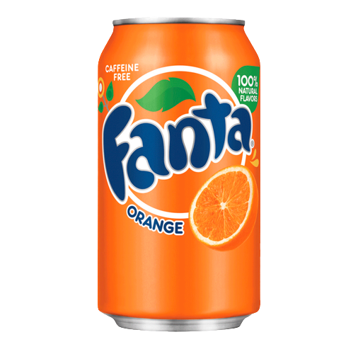

Fanta
falvour Updated
Fanta flavor juice is a popular and refreshing beverage known for its fruity and vibrant taste. Available in a variety of flavors such as orange, grape, and tropical, Fanta juice offers a delightful burst of sweetness and tanginess, making it a favorite choice among consumers of all ages. Its carbonated nature adds a fizzy, effervescent quality that enhances its appeal. Fanta juice is often served chilled, making it a perfect thirst-quencher on hot days. With its wide range of flavors and effervescent qualities, Fanta flavor juice continues to be a go-to option for those seeking a delicious and revitalizing beverage option.